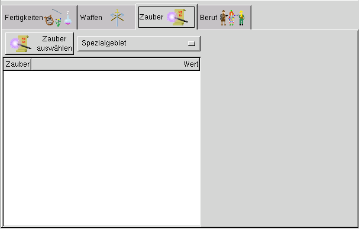
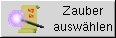
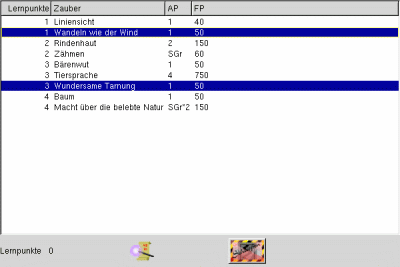

Hier werden die Zauberfertigkeiten ausgewählt, die der Abenteurer nach seiner Erschaffung beherrscht.
Dieses Lernschema ist nur sichtbar, wenn es sich um einen Magiekundigen Abenteurer handelt.
Spezialgebiet auswählen:
Mit diesem Button wird das Spezialgebiet des Abenteurers festgelegt, so es sich um einen Magier handelt.


Über diesen Button gelangt man zur Auswahl der Zauber.
Es werden nur die Zauber angezeigt, die der Abenteurer erlernen darf.
Der gewünschte Zauber kann mit der Maus selektiert werden und ist danach blau markiert.
Um einen Zauber wieder abzuwählen wird er nochmals mit der Maus angeklickt und ist danech
nicht merh markiert. Die Lernpunkte werden dabei wieder automatich abgezogen, bzw. gutgeschrieben.